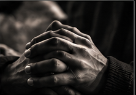

Vision
To see people encounter Jesus, awaken to truth, and live fully from their identity in Christ.
A people mature in faith, grounded in love, and unveiled in the presence of God.The Unveiled Assembly / Our Story
A ministry shaped by revelation, surrender, and a life made visible through service.
EnterWe do not gather around a personality. We gather around a revelation—Christ in us.
The Assembly is a Christ-centered ministry devoted to revelation, prayer, spiritual formation, teaching, and authentic fellowship.
We create space for people to encounter truth, grow in spiritual maturity, and live from the reality of Christ within. This is the meaning behind our name and our declaration—Christ Revealed. A People Unveiled.
To see people encounter Jesus, awaken to truth, and live fully from their identity in Christ.
A people mature in faith, grounded in love, and unveiled in the presence of God.To create spaces for encounter and understanding through clear teaching, prayer, authentic fellowship, spiritual formation, and compassionate service.
Inside the Assembly and wherever practical need meets us.
PEACE,My journey with Jesus Christ did not begin with faith.
At seventeen, a devastating car accident confronted me with the reality of death. In the middle of that chaos, I encountered Jesus Christ—and heard the words, “Peace, be still.”
My journey with Jesus Christ did not begin with faith. Growing up, although my mother exposed us to church from time to time, I did not believe in God. I was an atheist. At seventeen years old, my life changed through a devastating car accident that resulted in the loss of sight in my right eye. In the midst of that accident, I was separated from my physical body and confronted with the reality of death. It was there that I encountered Jesus Christ.
Unable to physically speak, I remember my thoughts becoming louder than words. As I became aware of an overwhelming presence, I asked within myself, “Who is this?” Then I heard the name Jesus as though it were being spoken in every language at once. During that encounter, the Lord revealed things concerning my life and what was ahead of me. Although I would lose sight in one eye, He told me He would restore my sight in another way. In the middle of the chaos, I heard the words, “Peace, be still.” When I regained awareness at the scene of the accident, an unusual calm filled me. I had encountered God.
Yet encountering God did not immediately mean that I surrendered to Him. I could no longer deny His existence, but I still wrestled with Him. I was angry, confused, and full of questions about why my life had taken this turn. I knew of God, but I had not yet placed my faith in God. Around the age of eighteen, I met a young man of faith who shared the gospel of Jesus Christ with me. During that season, I also experienced spiritual possession. Yet even there, I encountered the overwhelming power, mercy, and love of Jesus Christ. For a second time, Jesus spared my life.
Still, I did not want to give my life to God simply because someone told me to. I wanted to know Him for myself, so I began to study. As I opened Scripture with an open heart, the God I encountered in His Word began to make sense of the God I had encountered before I truly knew the Bible. I discovered His character, His love, His grace, His patience, and His mercy. Eventually, my questions became surrender. I received Jesus Christ as my Lord and Savior and answered the call He placed on my life during that encounter at seventeen: to serve.
Today, I have devoted my life to serving Jesus Christ and His people as He has served us. My desire is to share Christ through both encounter and understanding, helping people not only experience His presence, but truly know who He is. My testimony is not simply that I gave my life to Jesus. He gave His life for me, and I accepted it.
Though I had a great encounter with Jesus Christ, the encounter alone was not what made me choose Him as my Lord and Savior. Coming from atheism, I had many questions about God, His existence, His power, humanity, suffering, and the brokenness we see in the world. I needed more than an experience. I needed understanding.
As I began studying Scripture with an open heart, I found answers to many of the questions that once fueled my unbelief. Most importantly, the character of Jesus revealed throughout Scripture was consistent with the character I had personally encountered. I came to know Him not only through experience, but through truth.
“The more I sought to know Him, the more I found Him to be consistent with His Word.”
Our ministry does not end when a gathering closes. The love of Christ must become visible in neighborhoods, homes, and practical needs.
Not a slogan. A description of what happens when revelation meets a surrendered life.